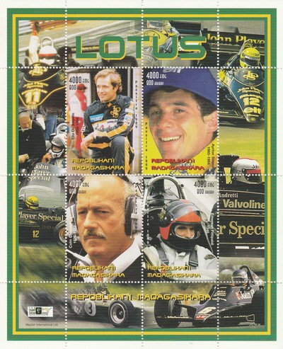

Republic of Madagascar
|
 Issue date: 1999 A sheet of four values featuring Lotus. - Elio de Angelis raced in F1 from 1979 to 1986, he drove for Lotus from 1980 to 1985 - his best result came in 1984 when he was 3rd in the drivers' championship - Ayrton Senna drove for Lotus from 1985 to 1987 - his best result for Lotus came in 1987 when he was 3rd in the drivers' championship - Colin Chapman - in 1952 Chapman founded the sports car company Lotus Cars; under his direction, Team Lotus won seven F1 Constructors' titles, six Drivers' Championships, and the Indianapolis 500 in the United States, between 1962 and 1978 - Emerson Fittipaldi raced in F1 from 1970 to 1980, he drove for Lotus from 1970 to 1973 - his best result came in 1972 when he won the drivers' championship in the Lotus 72D  Issue date: 1990 A mini sheet of eight values featuring the following F1 cars: Bugatti T251 - 1956 - this car featured a uniquely transversely mounted engine fitted behind the driver, but it was not competitive Lotus 25 - 1962 - designed by Colin Chapman, this was a revolutionary car - it was the first car to feature a fully stressed monocoque chassis Porsche 718 - 1963 - Carel Godin de Beaufort, a privateer, entered a 718 in F1 between 1961 and 1964. He was killed driving his 718 during practice for the 1964 German Grand Prix at the Nurburgring Honda RA273/RA300 - 1967 - John Surtees drove both the RA273 and the RA300 for the Honda racing team in this year Ferrari 312 - 1968 - the designation 312 indicates a 3 litre 12 cylinder engine Matra MS120 - 1970 - driven by Jean-Pierre Beltoise and Henri Pescarolo, the car was not competitive Ligier JS11 - 1980 - a successful ground effect car designed by Gerard Ducarouge; it was powered by the Ford Cosworth DFV married to a Ligier in-house built gearbox Benetton B192 - 1992 - designed by Ross Brawn and Rory Byrne, the car was quite competitive with Michael Schumacher and Martin Brundle scoring many podiums with it (Schumacher in his first "proper" F1)  Issue date: 1999 A mini sheet featuring Lotus - Team Lotus (a spin of from Lotus Engineering Ltd) competed in F1 from 1958 to 1994, in that time the team won 7 constructors' championships. Under the direction of founder and Chief Designer Colin Chapman Lotus was responsible for many innovative and experimental developments in motorsport, in both technical and commercial arenas. Elio de Angelis drove for Lotus from 1980 to 1985, in that time he achieved 2 victories and a third place in the drivers' championship. Ayrton Senna drove for Lotus from 1985 to 1987, in that time he achieved 6 victories and a third place in the drivers' championship.  Issue date: 1996 A single value featuring Ayrton Senna and the Williams FW16. For 1994, Senna finally signed with the Williams-Renault team after Prost had reluctantly decided to end his career. Prost's contract clause forbidding Senna from joining Williams did not extend to 1994 and Prost retired with one year left on his contract, rather than face the prospect of a repeat of the animosities of 1989 and 1990. Pre-season testing showed that the new Williams FW16 car had speed, but it was extremely difficult to control. Senna himself had made numerous diplomatic comments that the FW16 had some quirks which needed to be ironed out due to the fact that, contractually, he was forbidden from outright criticising the car. It was obvious that the FW16, after the regulation changes banning active suspension, traction control, power brakes, and ABS, exhibited none of the superiority of the FW15C and FW14B cars that had preceded it. It was also the first season that Williams used power steering, a system which had been problematic. Furthermore, the cockpit was too tight for Senna's frame, and several adjustments were subsequently made, including the lengthening of the steering column by 12 millimetres. The surprise of testing was the Benetton team, whose car was more nimble than the Williams although less powerful. Senna prophetically commented, "It's going to be a season with lots of accidents, and I'll risk saying that we'll be lucky if something really serious doesn't happen."  Issue date: 1999 A mini sheet of one value featuring a Jaguar F1 car. Jaguar Racing competed in the F1 World Championship from 2000 to 2004. It was formed from the purchase by Ford of Jackie Stewart's Stewart Grand Prix Formula One team in June 1999. Ford renamed the team Jaguar Racing as part of its global marketing operations to promote their Jaguar premium car company. Despite this branding, they continued to use Ford-Cosworth engines in the cars, no Jaguar engineering was involved. During the years of Ford's ownership, the team was unable to revive its performances of 1999 (4th in the Constructor's Championship). |